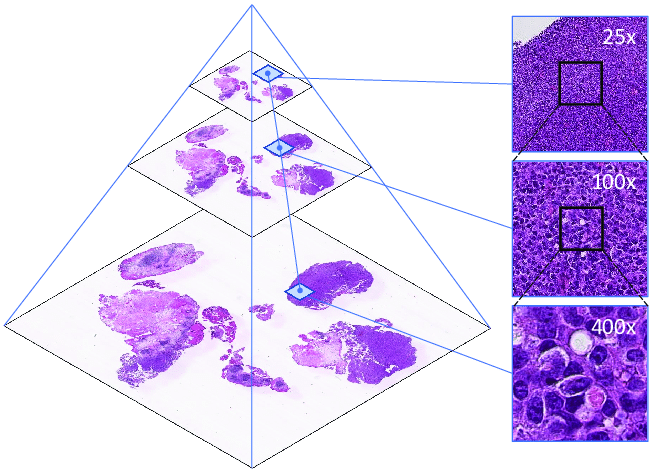

Introduction to SpatialData objects#
⚠️ Adjust the variable below to the data path on your specific workstation.
data_path = "../data/"
Reading common raw data formats#
The spatialdata-io library allows for reading common raw data formats.
Here we show an example where 3 very different technologies from 10x Genomics are read into a general data structure, given by the SpatialData class. From the presentation you might remember that these are the elements that can be contained inside of a SpatialData object:

Visium#
from spatialdata_io import visium, visium_hd, xenium
/Users/tim.treis/anaconda3/envs/spatialdata-workshop/lib/python3.11/site-packages/anndata/utils.py:434: FutureWarning: Importing read_text from `anndata` is deprecated. Import anndata.io.read_text instead.
warnings.warn(msg, FutureWarning)
sdata_visium = visium(data_path + "visium_2.1.0_2_io_subset")
INFO reading
../data/visium_2.1.0_2_io_subset/CytAssist_FFPE_Protein_Expression_Human_Glioblastoma_filtered_feature_bc_
matrix.h5
/Users/tim.treis/anaconda3/envs/spatialdata-workshop/lib/python3.11/site-packages/anndata/_core/anndata.py:1758: UserWarning: Variable names are not unique. To make them unique, call `.var_names_make_unique`.
utils.warn_names_duplicates("var")
/Users/tim.treis/anaconda3/envs/spatialdata-workshop/lib/python3.11/site-packages/anndata/_core/anndata.py:1758: UserWarning: Variable names are not unique. To make them unique, call `.var_names_make_unique`.
utils.warn_names_duplicates("var")
/Users/tim.treis/anaconda3/envs/spatialdata-workshop/lib/python3.11/site-packages/spatialdata/models/models.py:1053: UserWarning: Converting `region_key: region` to categorical dtype.
return convert_region_column_to_categorical(adata)
The warning above indicates that the variable names (in this case, genes) in the provided data are not unique. It is essential that the variable names are unique to ensure the accuracy of several analysis steps, so we’ll use the AnnData API to make sure of that.
sdata_visium.tables["table"].var_names_make_unique() # modifies in-place
Let’s have a look at the SpatialData object we just created:
sdata_visium
SpatialData object
├── Images
│ ├── 'CytAssist_FFPE_Protein_Expression_Human_Glioblastoma_hires_image': DataArray[cyx] (3, 2000, 1744)
│ └── 'CytAssist_FFPE_Protein_Expression_Human_Glioblastoma_lowres_image': DataArray[cyx] (3, 600, 523)
├── Shapes
│ └── 'CytAssist_FFPE_Protein_Expression_Human_Glioblastoma': GeoDataFrame shape: (5756, 2) (2D shapes)
└── Tables
└── 'table': AnnData (5756, 18085)
with coordinate systems:
▸ 'downscaled_hires', with elements:
CytAssist_FFPE_Protein_Expression_Human_Glioblastoma_hires_image (Images), CytAssist_FFPE_Protein_Expression_Human_Glioblastoma (Shapes)
▸ 'downscaled_lowres', with elements:
CytAssist_FFPE_Protein_Expression_Human_Glioblastoma_lowres_image (Images), CytAssist_FFPE_Protein_Expression_Human_Glioblastoma (Shapes)
▸ 'global', with elements:
CytAssist_FFPE_Protein_Expression_Human_Glioblastoma_hires_image (Images), CytAssist_FFPE_Protein_Expression_Human_Glioblastoma_lowres_image (Images), CytAssist_FFPE_Protein_Expression_Human_Glioblastoma (Shapes)
Visium HD#
sdata_visium_hd = visium_hd("../data/visium_hd_3.0.0_io_subset")
sdata_visium_hd
/Users/tim.treis/anaconda3/envs/spatialdata-workshop/lib/python3.11/site-packages/anndata/_core/anndata.py:1758: UserWarning: Variable names are not unique. To make them unique, call `.var_names_make_unique`.
utils.warn_names_duplicates("var")
/var/folders/qg/qgc908995g3fc8qtss2fsbhhxyxxj4/T/ipykernel_54847/2629054539.py:1: UserWarning: No full resolution image found. If incorrect, please specify the path in the `fullres_image_file` parameter when calling the `visium_hd` reader function.
sdata_visium_hd = visium_hd("../data/visium_hd_3.0.0_io_subset")
SpatialData object
├── Images
│ ├── 'Visium_HD_Mouse_Small_Intestine_hires_image': DataArray[cyx] (3, 5575, 6000)
│ └── 'Visium_HD_Mouse_Small_Intestine_lowres_image': DataArray[cyx] (3, 558, 600)
├── Shapes
│ └── 'Visium_HD_Mouse_Small_Intestine_square_008um': GeoDataFrame shape: (351817, 1) (2D shapes)
└── Tables
└── 'square_008um': AnnData (351817, 19059)
with coordinate systems:
▸ 'downscaled_hires', with elements:
Visium_HD_Mouse_Small_Intestine_hires_image (Images), Visium_HD_Mouse_Small_Intestine_square_008um (Shapes)
▸ 'downscaled_lowres', with elements:
Visium_HD_Mouse_Small_Intestine_lowres_image (Images), Visium_HD_Mouse_Small_Intestine_square_008um (Shapes)
▸ 'global', with elements:
Visium_HD_Mouse_Small_Intestine_hires_image (Images), Visium_HD_Mouse_Small_Intestine_lowres_image (Images), Visium_HD_Mouse_Small_Intestine_square_008um (Shapes)
sdata_visium_hd.tables["square_008um"].var_names_make_unique() # modifies in-place
Xenium#
sdata_xenium = xenium("../data/xenium_2.0.0_io_subset", cells_as_circles=True)
sdata_xenium
INFO reading ../data/xenium_2.0.0_io_subset/cell_feature_matrix.h5
<TiffTag.fromfile> raised TiffFileError('<tifffile.TiffTag 270 @124> invalid value offset 414390846')
SpatialData object
├── Images
│ ├── 'he_image': DataTree[cyx] (3, 5636, 1448), (3, 2818, 724), (3, 1409, 362), (3, 704, 181), (3, 352, 90)
│ └── 'morphology_focus': DataTree[cyx] (1, 17098, 51187), (1, 8549, 25593), (1, 4274, 12796), (1, 2137, 6398), (1, 1068, 3199)
├── Labels
│ ├── 'cell_labels': DataTree[yx] (17098, 51187), (8549, 25593), (4274, 12796), (2137, 6398), (1068, 3199)
│ └── 'nucleus_labels': DataTree[yx] (17098, 51187), (8549, 25593), (4274, 12796), (2137, 6398), (1068, 3199)
├── Points
│ └── 'transcripts': DataFrame with shape: (<Delayed>, 11) (3D points)
├── Shapes
│ ├── 'cell_boundaries': GeoDataFrame shape: (162254, 1) (2D shapes)
│ ├── 'cell_circles': GeoDataFrame shape: (162254, 2) (2D shapes)
│ └── 'nucleus_boundaries': GeoDataFrame shape: (156628, 1) (2D shapes)
└── Tables
└── 'table': AnnData (162254, 377)
with coordinate systems:
▸ 'global', with elements:
he_image (Images), morphology_focus (Images), cell_labels (Labels), nucleus_labels (Labels), transcripts (Points), cell_boundaries (Shapes), cell_circles (Shapes), nucleus_boundaries (Shapes)
Representation of a multiscale image:

Saving to the SpatialData Zarr format#
We introduce a storage format that extends the NGFF (Next Generation File Format) specification. The NGFF specification is implemented in the OME-Zarr disk format; the SpatialData Zarr format is an extension of OME-Zarr and will eventually converge to it.
Practically you can write the data as follows.
⚠️ Please uncomment the following cells with write() if this is the first time you run this notebook. They are commented because they make automated testing of the notebook easier (faster and no overwrite of files used by other notebooks).
sdata_visium.write(data_path + "visium.zarr", overwrite=True)
INFO The Zarr backing store has been changed from None the new file path: ../data/visium.zarr
sdata_visium_hd.write(data_path + "visium_hd.zarr", overwrite=True)
INFO The Zarr backing store has been changed from None the new file path: ../data/visium_hd.zarr
sdata_xenium.write(data_path + "xenium.zarr", overwrite=True)
<TiffTag.fromfile> raised TiffFileError('<tifffile.TiffTag 270 @124> invalid value offset 414390846')
INFO The Zarr backing store has been changed from None the new file path: ../data/xenium.zarr
Loading SpatialData from a disk-backed .zarr#
Given a SpatialData .zarr file, you can print its text representation from a terminal with:python -m spatialdata peek data.zarr.
Saving to .zarr and re-reading the data is generally recommended when the data is large, since our storage format is optimized for dealing with large collections of images, geometries and annotations. For instance, if you save the data to Zarr and need to access a portion of an iamge, you will be able to read that portion without having to read the whole image.
# spatialdata-io is not needed in case your data is already in the SpatialData Zarr format
import spatialdata as sd
sdata_visium = sd.read_zarr(data_path + "visium.zarr")
sdata_visium_hd = sd.read_zarr(data_path + "visium_hd.zarr")
sdata_xenium = sd.read_zarr(data_path + "xenium.zarr")
/Users/tim.treis/anaconda3/envs/spatialdata-workshop/lib/python3.11/site-packages/anndata/_core/aligned_df.py:68: ImplicitModificationWarning: Transforming to str index.
warnings.warn("Transforming to str index.", ImplicitModificationWarning)
Exploring the core slots of a SpatialData object#
A SpatialData object is a container for images, labels, shapes, points and tables. Each of this object is denoted with the term element. We will use this term often.
For instance, we will use the term “Shapes element” to denote a geometric object (as we will see below, a dataframe) containing all the cells for a sample. We will not use the term “shapes element” to denote a single cell (a single cell will be a single row in our geometric dataframe).
The spatialdata library does not introduce specific types for storing the elements, and rather adopts standard classes from the imaging and geospatial Python community.
We use the following classes for storing the elements:
single-scale images and labels elements are represented as
xarray.DataArrayobjects.multi-scale images and labels elements are represented as
datatree.DataTreeobjects.shapes elements are represented as
geopandas.GeoDataFrameobjects.points elements are represented as a lazy version of a
pandas.DataFrameobject; i.e. asdask.DataFrameobjects.tables elements are represented as
anndata.AnnDataobjects.
In particular:
2D/3D (cyx/czyx) multi-channel single-scale/multi-scale images (e.g. large H&E images)
2D/3D (yx/zyx) single-scale/multi-scale labels (e.g. segmentation masks)
2D/3D (xy/xyz) points (e.g. transcripts locations with gene id information)
2D (xy) shapes (e.g. cell/nucleus boundaries, anatomical annotatoins)
tables (sparse/dense matrices/dataframes annotating the data).
We will give a quick overview of these classes here below; please refer to the respective documentations for a deeper introduction.
In the following examples *we will not manipulate or plot the elements using spatialdata code; we will just use standard geospatial libraries. This is to exemplify and remark how the data types we use are interoperable. Later we will show how spatialdata adds a layer of convenience on top of the existing geospatial ecosystem, by providing APIs that are implemented under the hood for all the geometric types.
Images and Labels (xarray.DataArray)#
image = sdata_visium.images["CytAssist_FFPE_Protein_Expression_Human_Glioblastoma_hires_image"]
image
<xarray.DataArray 'image' (c: 3, y: 2000, x: 1744)> Size: 10MB
dask.array<from-zarr, shape=(3, 2000, 1744), dtype=uint8, chunksize=(3, 2000, 1744), chunktype=numpy.ndarray>
Coordinates:
* c (c) <U1 12B 'r' 'g' 'b'
* y (y) float64 16kB 0.5 1.5 2.5 3.5 ... 1.998e+03 1.998e+03 2e+03
* x (x) float64 14kB 0.5 1.5 2.5 3.5 ... 1.742e+03 1.742e+03 1.744e+03
Attributes:
transform: {'downscaled_hires': Identity , 'global': Scale (c, y, x)\n ...image.plot.imshow()
<matplotlib.image.AxesImage at 0x307e51ed0>
As you can see, the object is a regular xarray.DataArray object, a standard data structure in geospatial analysis. Therefore you can operate on the object with standard APIs or common external libraries (such as xarray-spatial.
For example:
import numpy as np
log_image = np.log1p(image).astype(np.float32)
log_image
<xarray.DataArray 'image' (c: 3, y: 2000, x: 1744)> Size: 42MB
dask.array<astype, shape=(3, 2000, 1744), dtype=float32, chunksize=(3, 2000, 1744), chunktype=numpy.ndarray>
Coordinates:
* c (c) <U1 12B 'r' 'g' 'b'
* y (y) float64 16kB 0.5 1.5 2.5 3.5 ... 1.998e+03 1.998e+03 2e+03
* x (x) float64 14kB 0.5 1.5 2.5 3.5 ... 1.742e+03 1.742e+03 1.744e+03
Attributes:
transform: {'CytAssist_FFPE_Protein_Expression_Human_Glioblastoma_downsc...As said, the image is a regular xarray.DataArray object, so we can for instance plot it using standard APIs.
The datatree.DataTree class (multiscale images and labels)#
Multiscale images and labels are represented using the datatree.DataTree class.
We will use the Xenium dataset since the MERFISH ones does not contain any multiscale image.
sdata_xenium
SpatialData object
├── Images
│ ├── 'he_image': DataTree[cyx] (3, 5636, 1448), (3, 2818, 724), (3, 1409, 362), (3, 704, 181), (3, 352, 90)
│ └── 'morphology_focus': DataTree[cyx] (1, 17098, 51187), (1, 8549, 25593), (1, 4274, 12796), (1, 2137, 6398), (1, 1068, 3199)
├── Labels
│ ├── 'cell_labels': DataTree[yx] (17098, 51187), (8549, 25593), (4274, 12796), (2137, 6398), (1068, 3199)
│ └── 'nucleus_labels': DataTree[yx] (17098, 51187), (8549, 25593), (4274, 12796), (2137, 6398), (1068, 3199)
├── Points
│ └── 'transcripts': DataFrame with shape: (<Delayed>, 11) (3D points)
├── Shapes
│ ├── 'cell_boundaries': GeoDataFrame shape: (162254, 1) (2D shapes)
│ ├── 'cell_circles': GeoDataFrame shape: (162254, 2) (2D shapes)
│ └── 'nucleus_boundaries': GeoDataFrame shape: (156628, 1) (2D shapes)
└── Tables
└── 'table': AnnData (162254, 377)
with coordinate systems:
▸ 'global', with elements:
he_image (Images), morphology_focus (Images), cell_labels (Labels), nucleus_labels (Labels), transcripts (Points), cell_boundaries (Shapes), cell_circles (Shapes), nucleus_boundaries (Shapes)
Let’s load a labels object instead of an image. Images always have a channel c, labels never. What we will discuss for labels applies exaclty to images.
multiscale_labels = sdata_xenium["cell_labels"]
multiscale_labels
<xarray.DatasetView> Size: 0B
Dimensions: ()
Data variables:
*empty*The data tree has 5 groups, one for each scale of the multiscale labels. Each scale is a leaf of the tree (i.e. the tree doesn’t branch out again), also each scale could in principle contain multiple labels elements, but spatialdata requires for it to contain a single labels element. Let’s show an example on how to access the various scales and how to manipulate the object.
# show the scales
list(multiscale_labels.keys())
['scale0', 'scale1', 'scale2', 'scale3', 'scale4']
# access the scale 1
multiscale_labels["scale1"]
<xarray.DatasetView> Size: 875MB
Dimensions: (y: 8549, x: 25593)
Coordinates:
* y (y) float64 68kB 1.0 3.0 5.0 7.0 ... 1.709e+04 1.71e+04 1.71e+04
* x (x) float64 205kB 1.0 3.0 5.0 7.0 ... 5.118e+04 5.118e+04 5.119e+04
Data variables:
image (y, x) uint32 875MB dask.array<chunksize=(4096, 4096), meta=np.ndarray># this group contains a single-labels (as expected), called 'image'
# let's access such object
multiscale_labels["scale1"]["image"]
<xarray.DataArray 'image' (y: 8549, x: 25593)> Size: 875MB
dask.array<xarray-<this-array>, shape=(8549, 25593), dtype=uint32, chunksize=(4096, 4096), chunktype=numpy.ndarray>
Coordinates:
* y (y) float64 68kB 1.0 3.0 5.0 7.0 ... 1.709e+04 1.71e+04 1.71e+04
* x (x) float64 205kB 1.0 3.0 5.0 7.0 ... 5.118e+04 5.118e+04 5.119e+04
Attributes:
transform: {'global': Sequence \n Scale (y, x)\n [2. 2...Note how the labels is a xarray.DataArray object. So, as expected, a multiscale labels is a collection of single scale labels.
Note also how the labels dimension are ('y', 'x'); as said labels do no contain the channel dimension.
Now here is an example of using the data tree APIs, to slice in one go all the labels in the data tree.
multiscale_labels.sel(x=slice(30, 100))
<xarray.DatasetView>
Dimensions: ()
Data variables:
*empty*Finally, let’s make a plot of a portion of a portion of the labels.
multiscale_labels["scale0"]["image"].sel(
x=slice(10000, 10200), y=slice(10000, 10200)
).plot.imshow()
<matplotlib.image.AxesImage at 0x307db2f90>
Shapes (geopandas.GeoDataFrame)#
A GeoDataFrame is an object that inherits from a pandas.DataFrame, and as such it supports the APIs that pandas provides, but also new powerful APIs for geometric manipulation.
gdf = sdata_xenium["cell_boundaries"]
gdf
| geometry | |
|---|---|
| aaaadpbp-1 | POLYGON ((205.062 1489.838, 204.213 1490.475, ... |
| aaaaficg-1 | POLYGON ((200.812 1811.988, 199.538 1812.625, ... |
| aaabbaka-1 | POLYGON ((177.013 2158.575, 175.525 2159.425, ... |
| aaabbjoo-1 | POLYGON ((185.513 2156.238, 184.238 2157.3, 18... |
| aaablchg-1 | POLYGON ((197.2 2191.938, 197.413 2192.15, 197... |
| ... | ... |
| ojaaphhh-1 | POLYGON ((4551.538 1640.925, 4551.325 1641.138... |
| ojabeldf-1 | POLYGON ((4437.212 1627.75, 4437 1627.963, 443... |
| ojacfbid-1 | POLYGON ((4462.712 1575.05, 4462.288 1575.475,... |
| ojacfhhg-1 | POLYGON ((4619.962 1452.863, 4619.75 1453.075,... |
| ojacpeii-1 | POLYGON ((4620.175 1526.388, 4619.75 1526.812,... |
162254 rows × 1 columns
The geometry column is what contains the spatial information.
gdf.geometry.iloc[3]
In spatialdata, we support only dataframes where all the geometries are polygons/multipolygons, either where all the geometries are shapely.Point and a column called radius is present.
One can add new regular columns to the dataframe.
gdf["cell_area"] = gdf.area
gdf
| geometry | cell_area | |
|---|---|---|
| aaaadpbp-1 | POLYGON ((205.062 1489.838, 204.213 1490.475, ... | 65.273241 |
| aaaaficg-1 | POLYGON ((200.812 1811.988, 199.538 1812.625, ... | 47.436672 |
| aaabbaka-1 | POLYGON ((177.013 2158.575, 175.525 2159.425, ... | 115.961463 |
| aaabbjoo-1 | POLYGON ((185.513 2156.238, 184.238 2157.3, 18... | 90.922142 |
| aaablchg-1 | POLYGON ((197.2 2191.938, 197.413 2192.15, 197... | 116.932837 |
| ... | ... | ... |
| ojaaphhh-1 | POLYGON ((4551.538 1640.925, 4551.325 1641.138... | 25.084211 |
| ojabeldf-1 | POLYGON ((4437.212 1627.75, 4437 1627.963, 443... | 4.628853 |
| ojacfbid-1 | POLYGON ((4462.712 1575.05, 4462.288 1575.475,... | 5.621909 |
| ojacfhhg-1 | POLYGON ((4619.962 1452.863, 4619.75 1453.075,... | 6.141260 |
| ojacpeii-1 | POLYGON ((4620.175 1526.388, 4619.75 1526.812,... | 5.757876 |
162254 rows × 2 columns
Points(dask.DataFrame)#
The dask.DataFrame class is a subclass of pandas.DataFrame that allows for lazy loading and lazy, distributed computation using Dask. This is used because generally points collections of spatial transcriptomics datasets are too big to be handled with regular pandas.DataFrame objects.
When you perform operations on a dask.DataFrame, they are not computed until you choose to do so.
ddf = sdata_xenium["transcripts"]
ddf
| x | y | z | feature_name | cell_id | transcript_id | fov_name | codeword_index | overlaps_nucleus | nucleus_distance | qv | |
|---|---|---|---|---|---|---|---|---|---|---|---|
| npartitions=4 | |||||||||||
| float32 | float32 | float32 | category[unknown] | string | uint64 | string | int32 | uint8 | float32 | float32 | |
| ... | ... | ... | ... | ... | ... | ... | ... | ... | ... | ... | |
| ... | ... | ... | ... | ... | ... | ... | ... | ... | ... | ... | |
| ... | ... | ... | ... | ... | ... | ... | ... | ... | ... | ... | |
| ... | ... | ... | ... | ... | ... | ... | ... | ... | ... | ... |
subset = ddf[ddf.feature_name == "CXCR4"][["feature_name", "cell_id"]]
subset
| feature_name | cell_id | |
|---|---|---|
| npartitions=4 | ||
| category[unknown] | string | |
| ... | ... | |
| ... | ... | |
| ... | ... | |
| ... | ... |
Let’s now perform the operations by calling .compute().
df = subset.compute()
df
| feature_name | cell_id | |
|---|---|---|
| 2 | CXCR4 | UNASSIGNED |
| 3 | CXCR4 | UNASSIGNED |
| 213 | CXCR4 | UNASSIGNED |
| 214 | CXCR4 | UNASSIGNED |
| 272 | CXCR4 | UNASSIGNED |
| ... | ... | ... |
| 163229 | CXCR4 | UNASSIGNED |
| 163244 | CXCR4 | jgdldkap-1 |
| 163270 | CXCR4 | jgebeofm-1 |
| 163279 | CXCR4 | jgcgjopd-1 |
| 164996 | CXCR4 | UNASSIGNED |
78139 rows × 2 columns
As you can see, df is a regular pandas.DataFrame:
type(df)
pandas.core.frame.DataFrame
Tables(anndata.AnnData)#

Finally we use AnnData objects to store annotations. We introduced the jargon tables to denotes these objects; please keep in mind that AnnData objects allow for storing dataframes and sparse/dense tensors.
adata = sdata_xenium["table"]
adata
AnnData object with n_obs × n_vars = 162254 × 377
obs: 'cell_id', 'transcript_counts', 'control_probe_counts', 'control_codeword_counts', 'unassigned_codeword_counts', 'deprecated_codeword_counts', 'total_counts', 'cell_area', 'nucleus_area', 'region', 'z_level', 'nucleus_count', 'cell_labels'
var: 'gene_ids', 'feature_types', 'genome'
uns: 'spatialdata_attrs'
obsm: 'spatial'
Let’s see some examples. A gene expression matrix can be stored the .X slot.
adata.X
<Compressed Sparse Row sparse matrix of dtype 'float32'
with 4900367 stored elements and shape (162254, 377)>
adata.to_df()
| ABCC11 | ACE2 | ACKR1 | ACTA2 | ACTG2 | ADAM28 | ADAMTS1 | ADGRE1 | ADGRL4 | ADH1C | ... | TRAC | TREM2 | TSPAN19 | UBE2C | UMOD | UPK3B | VCAN | VSIG4 | VWA5A | VWF | |
|---|---|---|---|---|---|---|---|---|---|---|---|---|---|---|---|---|---|---|---|---|---|
| 0 | 0.0 | 0.0 | 0.0 | 0.0 | 0.0 | 0.0 | 0.0 | 0.0 | 0.0 | 0.0 | ... | 0.0 | 0.0 | 0.0 | 0.0 | 0.0 | 0.0 | 0.0 | 0.0 | 0.0 | 0.0 |
| 1 | 0.0 | 0.0 | 0.0 | 0.0 | 1.0 | 0.0 | 0.0 | 0.0 | 0.0 | 0.0 | ... | 2.0 | 0.0 | 0.0 | 0.0 | 0.0 | 0.0 | 0.0 | 0.0 | 0.0 | 0.0 |
| 2 | 0.0 | 0.0 | 0.0 | 0.0 | 1.0 | 1.0 | 0.0 | 0.0 | 0.0 | 0.0 | ... | 0.0 | 0.0 | 0.0 | 0.0 | 0.0 | 0.0 | 0.0 | 0.0 | 0.0 | 0.0 |
| 3 | 0.0 | 0.0 | 0.0 | 0.0 | 0.0 | 1.0 | 0.0 | 0.0 | 0.0 | 0.0 | ... | 0.0 | 0.0 | 0.0 | 0.0 | 0.0 | 0.0 | 0.0 | 0.0 | 0.0 | 0.0 |
| 4 | 0.0 | 0.0 | 0.0 | 0.0 | 0.0 | 0.0 | 0.0 | 0.0 | 0.0 | 0.0 | ... | 0.0 | 0.0 | 0.0 | 0.0 | 0.0 | 0.0 | 0.0 | 1.0 | 0.0 | 1.0 |
| ... | ... | ... | ... | ... | ... | ... | ... | ... | ... | ... | ... | ... | ... | ... | ... | ... | ... | ... | ... | ... | ... |
| 162249 | 0.0 | 0.0 | 0.0 | 0.0 | 0.0 | 0.0 | 0.0 | 0.0 | 0.0 | 0.0 | ... | 0.0 | 0.0 | 0.0 | 0.0 | 0.0 | 0.0 | 0.0 | 0.0 | 0.0 | 0.0 |
| 162250 | 0.0 | 0.0 | 0.0 | 0.0 | 0.0 | 0.0 | 0.0 | 0.0 | 0.0 | 0.0 | ... | 0.0 | 0.0 | 0.0 | 0.0 | 0.0 | 0.0 | 0.0 | 0.0 | 0.0 | 0.0 |
| 162251 | 0.0 | 0.0 | 0.0 | 0.0 | 0.0 | 0.0 | 0.0 | 0.0 | 0.0 | 0.0 | ... | 0.0 | 0.0 | 0.0 | 0.0 | 0.0 | 0.0 | 0.0 | 0.0 | 0.0 | 0.0 |
| 162252 | 0.0 | 0.0 | 0.0 | 0.0 | 0.0 | 0.0 | 0.0 | 0.0 | 0.0 | 0.0 | ... | 0.0 | 0.0 | 0.0 | 0.0 | 0.0 | 0.0 | 0.0 | 0.0 | 0.0 | 0.0 |
| 162253 | 0.0 | 0.0 | 0.0 | 0.0 | 0.0 | 0.0 | 0.0 | 0.0 | 0.0 | 0.0 | ... | 0.0 | 0.0 | 0.0 | 0.0 | 0.0 | 0.0 | 0.0 | 0.0 | 0.0 | 0.0 |
162254 rows × 377 columns
Information on the genes (=variables), is stored in the .var slot.
adata.var
| gene_ids | feature_types | genome | |
|---|---|---|---|
| ABCC11 | ENSG00000121270 | Gene Expression | Unknown |
| ACE2 | ENSG00000130234 | Gene Expression | Unknown |
| ACKR1 | ENSG00000213088 | Gene Expression | Unknown |
| ACTA2 | ENSG00000107796 | Gene Expression | Unknown |
| ACTG2 | ENSG00000163017 | Gene Expression | Unknown |
| ... | ... | ... | ... |
| UPK3B | ENSG00000243566 | Gene Expression | Unknown |
| VCAN | ENSG00000038427 | Gene Expression | Unknown |
| VSIG4 | ENSG00000155659 | Gene Expression | Unknown |
| VWA5A | ENSG00000110002 | Gene Expression | Unknown |
| VWF | ENSG00000110799 | Gene Expression | Unknown |
377 rows × 3 columns
Information on the cells (=observations), is stored in the .obs slot.
adata.obs
| cell_id | transcript_counts | control_probe_counts | control_codeword_counts | unassigned_codeword_counts | deprecated_codeword_counts | total_counts | cell_area | nucleus_area | region | z_level | nucleus_count | cell_labels | |
|---|---|---|---|---|---|---|---|---|---|---|---|---|---|
| 0 | aaaadpbp-1 | 0 | 0 | 0 | 0 | 0 | 0 | 68.456877 | NaN | cell_circles | 0.0 | 0.0 | 1 |
| 1 | aaaaficg-1 | 19 | 0 | 0 | 0 | 0 | 19 | 49.130002 | 21.268595 | cell_circles | 0.0 | 1.0 | 2 |
| 2 | aaabbaka-1 | 53 | 0 | 0 | 0 | 0 | 53 | 119.618911 | 74.778753 | cell_circles | 0.0 | 1.0 | 3 |
| 3 | aaabbjoo-1 | 29 | 0 | 0 | 0 | 0 | 29 | 94.241097 | 59.109533 | cell_circles | 0.0 | 1.0 | 4 |
| 4 | aaablchg-1 | 42 | 0 | 0 | 1 | 0 | 43 | 120.341411 | 52.426408 | cell_circles | 0.0 | 1.0 | 5 |
| ... | ... | ... | ... | ... | ... | ... | ... | ... | ... | ... | ... | ... | ... |
| 162249 | ojaaphhh-1 | 3 | 0 | 0 | 0 | 0 | 3 | 26.913126 | 11.153594 | cell_circles | 5.0 | 1.0 | 162250 |
| 162250 | ojabeldf-1 | 6 | 0 | 0 | 0 | 0 | 6 | 5.418750 | 5.418750 | cell_circles | 7.0 | 1.0 | 162251 |
| 162251 | ojacfbid-1 | 0 | 0 | 0 | 0 | 0 | 0 | 6.502500 | 6.502500 | cell_circles | 5.0 | 1.0 | 162252 |
| 162252 | ojacfhhg-1 | 2 | 0 | 0 | 0 | 0 | 2 | 7.089532 | 7.089532 | cell_circles | 5.0 | 1.0 | 162253 |
| 162253 | ojacpeii-1 | 1 | 0 | 0 | 0 | 0 | 1 | 6.683125 | 6.683125 | cell_circles | 5.0 | 1.0 | 162254 |
162254 rows × 13 columns
The slot .uns can contain unstructured data. In particular it contains some metadata that is used to link tables to the spatial elements (e.g. cell segmentation masks) that they annotate.
adata.uns
{'spatialdata_attrs': {'instance_key': 'cell_id',
'region': 'cell_circles',
'region_key': 'region'}}
image = sdata_visium.images[
"CytAssist_FFPE_Protein_Expression_Human_Glioblastoma_hires_image"
]
print(image.data)
image.data
dask.array<from-zarr, shape=(3, 2000, 1744), dtype=uint8, chunksize=(3, 2000, 1744), chunktype=numpy.ndarray>
|
||||||||||||||||
As you can see, xarray is using dask internally. You can compute the data as follows:
# produces an xarray object that is fully-loaded in memory
image.compute()
<xarray.DataArray 'image' (c: 1, y: 522, x: 575)>
array([[[0, 0, 0, ..., 0, 0, 0],
[0, 0, 0, ..., 0, 0, 0],
[0, 0, 0, ..., 0, 0, 0],
...,
[0, 0, 0, ..., 0, 0, 0],
[0, 0, 0, ..., 0, 0, 0],
[0, 0, 0, ..., 0, 0, 0]]], dtype=uint8)
Coordinates:
* c (c) int64 0
* y (y) float64 0.5 1.5 2.5 3.5 4.5 ... 517.5 518.5 519.5 520.5 521.5
* x (x) float64 0.5 1.5 2.5 3.5 4.5 ... 570.5 571.5 572.5 573.5 574.5
Attributes:
transform: {'global': Sequence \n Scale (c, y, x)\n [1. ...# accesses the data inside xarray, as a numpy array object
x = image.compute().data
print(type(x))
x
<class 'numpy.ndarray'>
array([[[0, 0, 0, ..., 0, 0, 0],
[0, 0, 0, ..., 0, 0, 0],
[0, 0, 0, ..., 0, 0, 0],
...,
[0, 0, 0, ..., 0, 0, 0],
[0, 0, 0, ..., 0, 0, 0],
[0, 0, 0, ..., 0, 0, 0]]], dtype=uint8)
Futher reading#
As mentioned before, we invite the readers to become familiar with the geospatial Python data structures that we use in the spatialdata library.
In the next tutorials we will explore various functions enabled by the spatialdata framework; anyway for a deeper introduction we kindly point you to the notebooks section of the documentation, and in particular to the following notebooks, which explain in detail how to create SpatialData objects from screatch and manipulate them:
Furthermore, you can find curated code examples by checking the various readers available in the spatialdata-io library.
Finally, for a deeper description of all the available functions, please consult the API documentation.